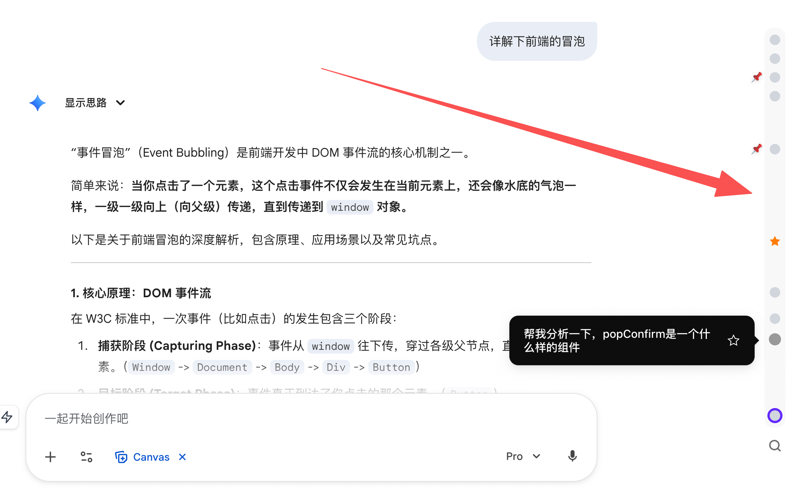
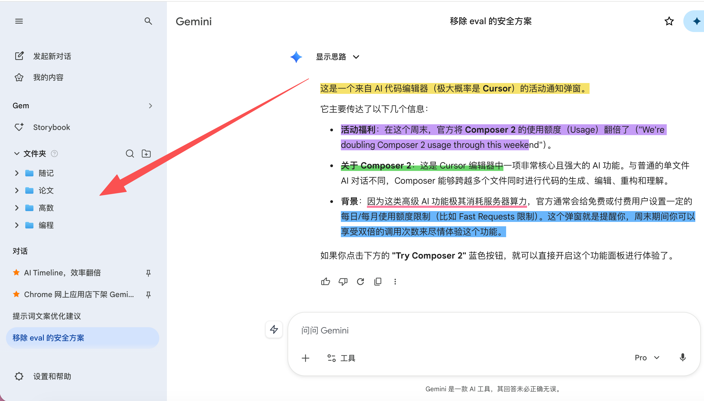
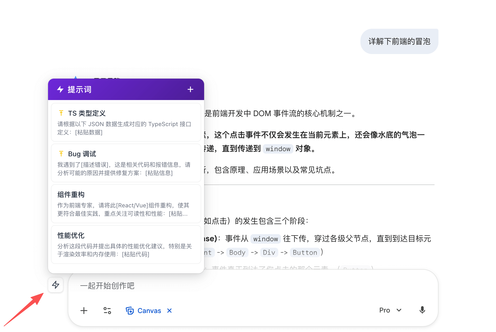
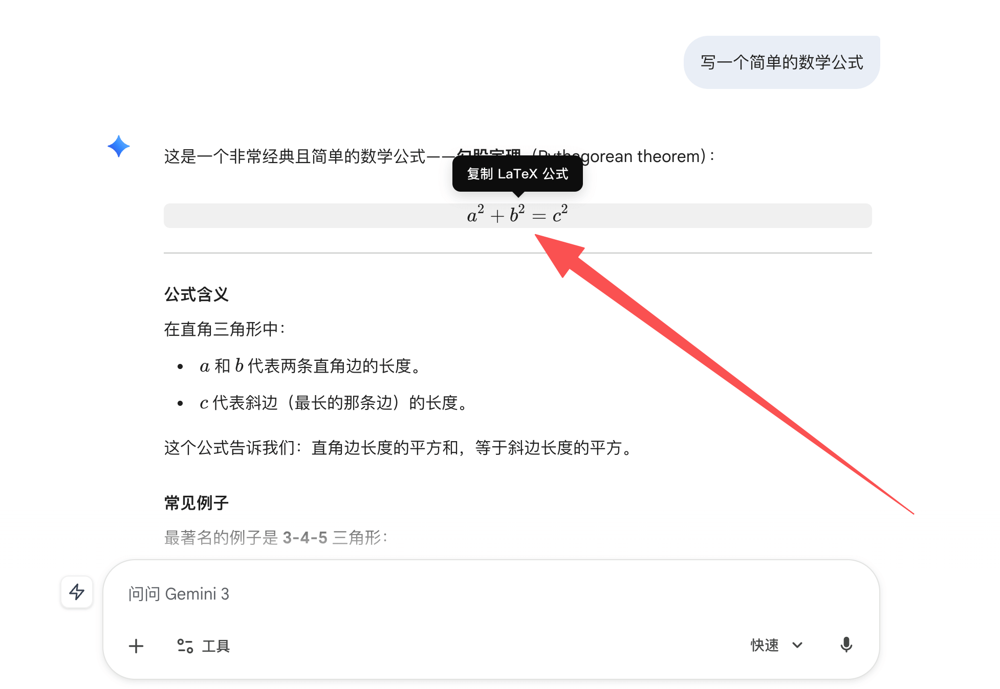
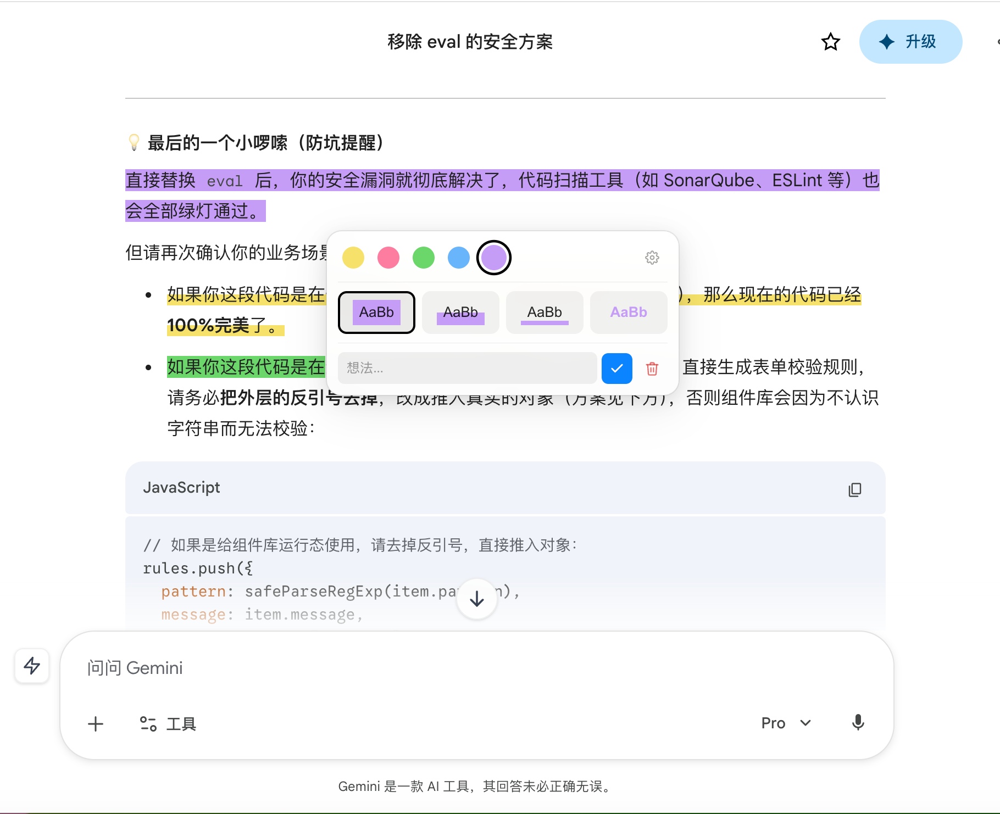
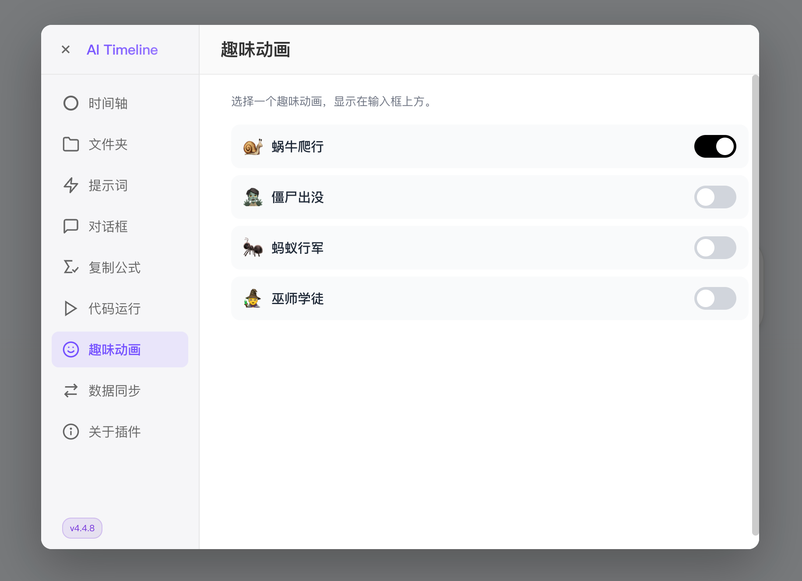
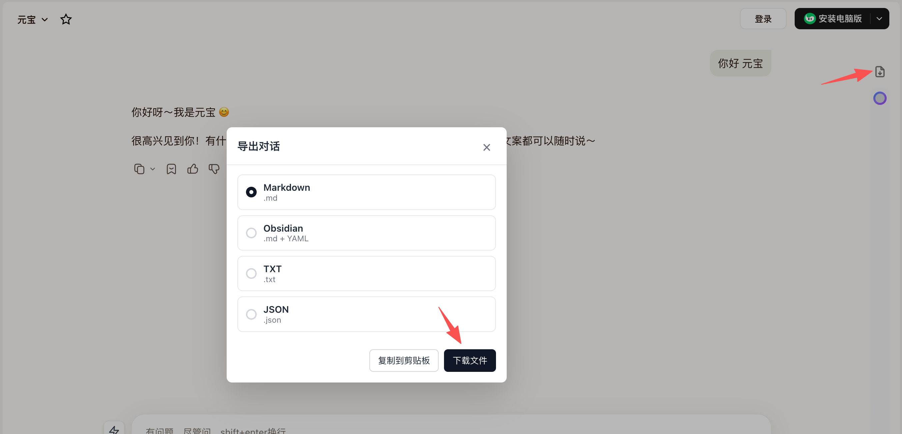
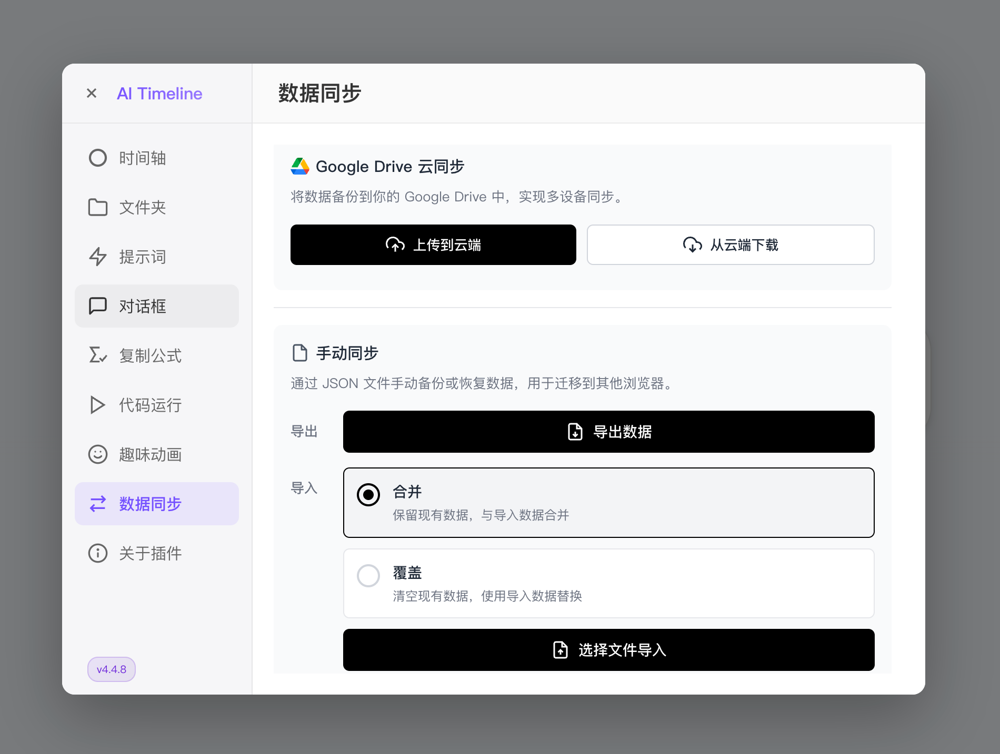

在浏览器中使用 AI，它会成为你的效率搭档。对话时间轴、文件夹、提示词、复制数学公式、文本高亮、追问等功能，把效率拉满。
强大的工具，让你的 AI 交互更高效、更有条理。
把你跟 AI 的对话整理成可交互时间轴，跳转对话，收藏对话。
智能识别任意网页上的公式，点击即可复制它的 LaTeX 格式。
启用后，自动去除 Gemini 生成图片上的水印。
快速打开提示词面板，一键调取常用提示词。
在网页上运行简单的代码块，支持 JavaScript、Python、JSON、Markdown 等热门语言。
跨平台收藏问题。统一管理，轻松访问所有重要对话。
单击回车换行，双击回车发送。增强多行输入的灵活性。
自动检测纯文本 URL，添加可点击的快捷按钮。
一键导出当前对话为 Markdown 或 JSON 格式，归档、分享、二次编辑，对话不再被困在浏览器里。
更多实用功能正在路上，让你的 AI 体验更上一层楼。








安装后自动适配，无需额外设置